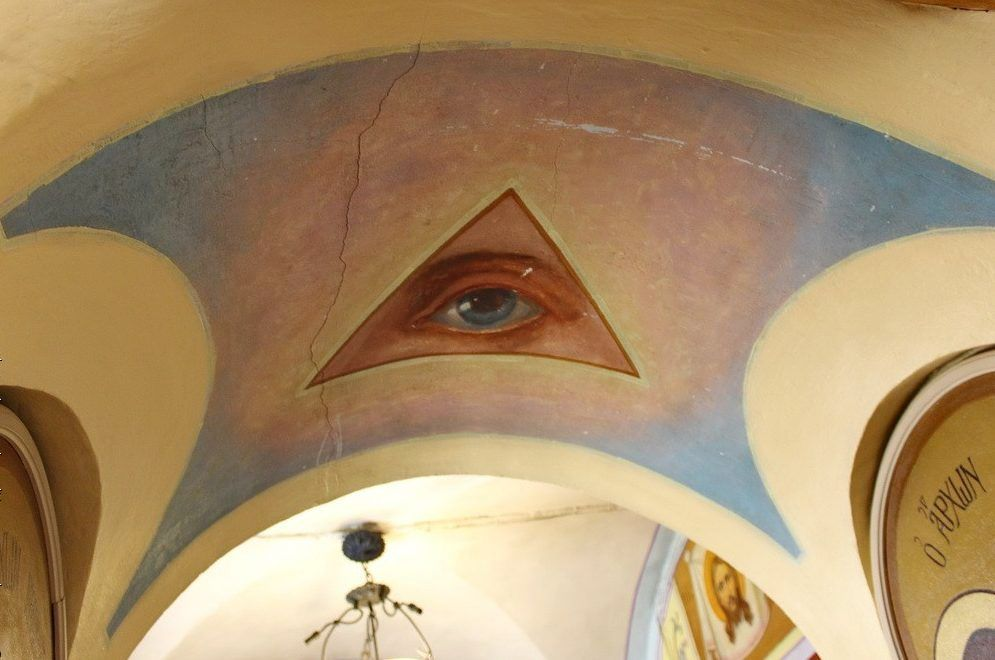
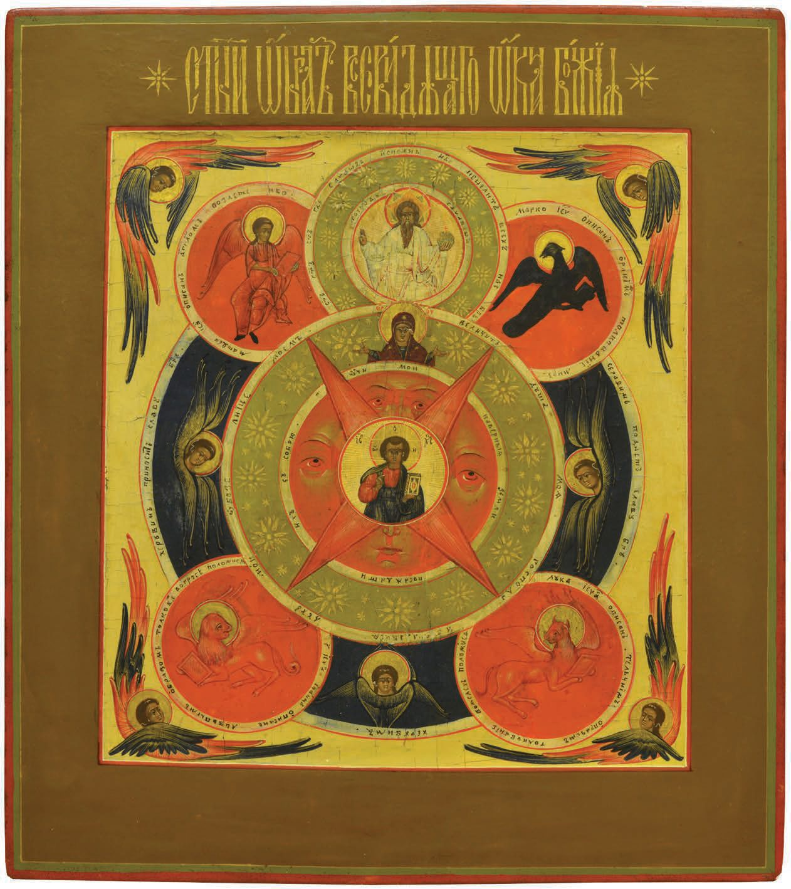
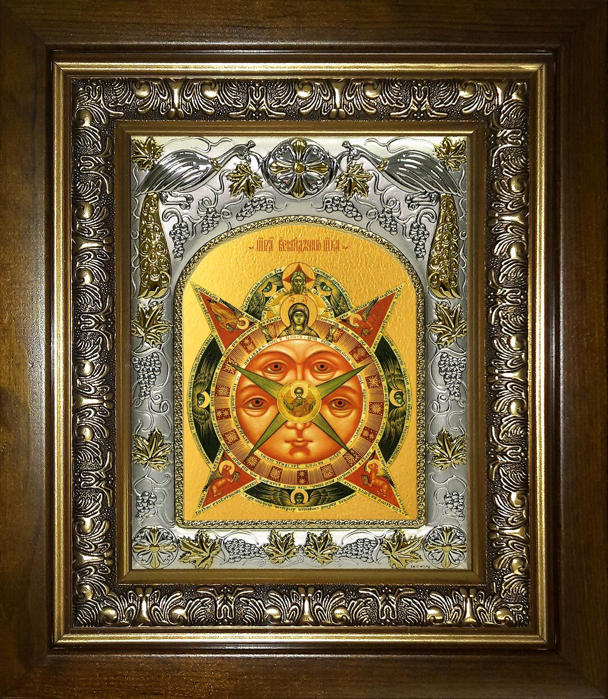

Икона «Всевидящее Око Божие»: значение, в чем помогает символ
Икона «Всевидящее Око» — интересный и сложный православный символ с богатой историей. В чем помогает икона, какое значение в ней заложено. Куда вешать образ и как правильно ему молиться.

Содержание
Если вы зайдете в православный храм и спросите батюшку об иконе «Всевидящее Око Божие», он, скорее всего, ответит, что подобного образа здесь нет. Не купите вы такую икону и в православной церковной лавке. Тем не менее, название этого образа у многих на слуху и всегда есть желающие приобрести его для домашнего иконостаса или личных молений.
Сегодня мы попытаемся рассказать всё об иконе «Всевидящее око»: почему ее нет в церквях, что на ней изображено и стоит ли православному человеку молиться этому символу. А выводы делайте сами!
История возникновения символа
«Всевидящее Око Божие» можно назвать признанной православной иконой с огромной натяжкой. Служители РПЦ считают ее неканонической, поэтому в иконостасах официальных храмов вы ее не найдете. А вот в старообрядческих церквях подобные образа встречаются очень часто, так как не противоречат представлениям староверов о Боге.
РПСЦ (Русская Православная Старообрядческая Церковь) имеет ряд принципиальных разногласий с официальной РПЦ. Они касаются различных вопросов: трактовки Святого Писания, церковных обрядов, крестного знамения и так далее.
Но самое главное различие между РПСЦ и РПЦ лежит, пожалуй, в области иконографии. Старообрядческие иконы, как правило, куда более аллегоричны. А еще на них можно увидеть изображение Бога Отца в образе человека, что для канонической православной иконографии неприемлемо.
Старообрядчество – это религиозное течение, отделившееся от русла РПЦ после реформы патриарха Никона примерно в середине XVII столетия. Не все священнослужители приняли насильственно насаждавшиеся перемены, что привело к расколу в их рядах.
Вследствие раскола в среде старообрядцев появились весьма неоднозначные иконы. К ним можно отнести и «Всевидящее Око» – творческое и весьма символичное изображение догматов православия.
Первые иконы этого извода появились, скорее всего, во Владимирской области в XVIII, причем первоначально это были храмовые фрески, то есть, настенные росписи. Более того: на них присутствовал глаз (око), заключенный в треугольник, чего не увидишь на современных иконах.
«Всевидящее Око» – широко известный масонский символ, не имеющий отношения к православию. Можно считать его даже оккультным, что для официальной РПЦ и вовсе неприемлемо. Но это не помешало появлению «Всевидящего Ока» Великого Архитектора Вселенной в XVIII-XIX столетиях во многих православных храмах. Этот символ присутствует даже на фронтоне знаменитого Казанского Собора в Санкт-Петербурге!

Иконопись в то время проходила через тяжелый кризис и переосмысление привычных образов. Скорее всего, икона «Всевидящее Око Божие» стало плодом творческих изысканий неизвестного живописца, попытавшегося визуализировать собственные представления о религии в духе того времени. Не исключено, что он состоял в сообществе «вольных каменщиков», которые тогда были весьма популярны и влиятельны.
В общем, тенденция была одобрена (особенно в среде старообрядцев), что породило массу списков с первообраза, так и оставшегося анонимным. Но грянула революция, и большинству людей стало не до творческих и религиозных изысканий.
Несколько позднее, уже к середине прошлого века, появились интерпретации «Всевидящего Ока», приближенные к канонической иконописи РПЦ. На них исчез образ Саваофа (визуализированного Бога Отца), лик Богородицы сместился на верхнюю позицию, а евангелисты предстали не только в условных, но и человеческих ипостасях. Но даже подобные «компромиссные» образа не признаются большинством последователей реформы Никона.
Если вы хотите помолиться иконе «Всевидящее Око Божие» в храме, лучше поискать этот образ в старообрядческой церкви. Только в столице насчитывается более десятка храмов, принадлежащих РПСЦ.
Значение и описание иконы «Всевидящее Око Божие»
Как уже было сказано выше, икона «Всевидящее Око» глубоко аллегорична. Начнем с того, что значение символа ока в православии отсутствует, но на этом образе многочисленные глаза, окружающие центральный образ Иисуса – это первое, что замечает молящийся. Считается, что это визуализация постулата о всевидящем и всезнающем Господе, который постоянно наблюдает за каждым из нас.
В центре композиции располагается поясное изображение Христа в образе Спаса Эммануила (то есть, отрока). Его руки иногда раскинуты в благословляющем и принимающем жесте, однако чаще Господь изображается с жестом хризмы и книгой (Законом Божьим). От фигуры Христа исходит Божественный свет, отождествляемый с благодатью и защитой.
Образ Христа заключен в несколько кругов разных цветов с надписями по окружности – это символ бесконечности и устремленности в будущее. В первом круге присутствует собственно Иисус Христос, а второй круг занят изображением глаз (обычно два сверху и по одному по бокам). Внизу присутствует изображение носа и рта, что приближает образ к реальному лицу человеческого воплощения Бога – Иисуса Христа.
Множественное изображение глаз – символ того, что Господь, несмотря на нашу многочисленность и обилие забот, способен наблюдать за каждым из нас постоянно. Он видит не только то, что мы делаем, но и что думаем и чувствуем.
В третьем круге мы видим изображение Пресвятой Богородицы (на самом его верху). Ее руки раскинуты в жесте наибольшего молитвенного напряжения – и в то же время, она будто желает обнять и защитить нас. Она неустанно молит Господа о прощении каждого нашего греха, выступая хранительницей всего живого на земле.

Внешний круг образа посвящен собственно Богу, который визуализирован в образе Саваофа (убеленного сединами старца). Он доминирует над композицией, что символизирует его царствие во всей Вселенной. А по окружности разбросаны изображения Ангельского Воинства, охраняющего Небесный Престол и выполняющего волю Господа.
В лучах или окружностях, расположенных по углам композиции, предстают символические изображения евангелистов, то есть, создателей Нового Завета (разумеется, по воле Божьей). Каждый из них имеет нимб, пару крыльев (символ принадлежности к Царствию Небесному) и держит в руках книгу с Евангелием.
Это канонический тетраморф, который изображается следующим образом:
- Матфей – Ангел, человек (непосредственный символ воплощения Господа в человеческом облике);
- Иоанн – Орел (визуализация Святого Духа и Вознесения Господня);
- Марк – Лев (действенное и царственное начало, господство и неограниченная власть);
- Лука – Телец (великая жертвенность Христа, его подвиг для спасения человечества).
РПЦ официально запрещает изображение евангелистов в образах анималистического тетраморфа. На канонических иконах они могут присутствовать только в виде символов, сопровождающих изображения Матфея, Иоанна, Марка и Луки в человеческом обличье.
Икона «Всевидящее Око Божие» имеет массу смысловых слоев. Однако главным из них является постулат о том, что ни один человек на земле не является одиноким – с ним постоянно и неусыпно присутствует Бог. Поэтому Суд Божий будет непременно справедливым: Господу ведомы даже скрытые наши мысли и деяния, которые он положит на чаши весов.
В чем помогает образ
Считается, что икона «Всевидящее Око Божие» особенно помогает при утрате веры в справедливость и впадении в грех уныния. Она помогает человеку почувствовать, что Бог видит все и виновные в злодеяниях обязательно понесут наказание.
Существует мнение, что эта икона особенно хороша для служителей закона – молитва ей помогает вершить правосудие. Впрочем, это актуально для всех, от чьих решений зависит будущее многих людей: политиков, чиновников высокого ранга, руководителей крупного бизнеса и так далее. А еще эту икону любят многие родители: они считают, что присутствие ее в доме помогает уследить за шаловливой ребятней.
Господь не следит за нами намеренно: он просто знает все, что происходит в этом мире. Бог дарует нам свободу поступать, как нам захочется, но каждый поступок обязательно будет взвешен и оценен.
Куда вешать и как молиться святыне
Как уже было сказано выше, «Всевидящее Око Божие» – не каноническая православная икона, поэтому стоит подумать, насколько она уместна будет в вашем доме.

Если вы являетесь убежденным прихожанином РПЦ, прислушайтесь к своим ощущениям – тяготеет ли ваша душа к подобным противоречивым образам. Если ответ утвердительный, можно приобрести икону «Всевидящее Око» в интернет-магазине или у ремесленника. Однако размещать ее в домашнем алтаре не стоит – лучше повесить ее отдельно.
Все иконы желательно располагать:
- подальше от бытовой техники (особенно телевизора), светских картин и предметов декора;
- на свободной стене, желательно так, чтобы при молении обращаться лицом на восток;
- в любой комнате квартиры, кроме санузла.
В помещении, где расположены иконы, необходимо соблюдать чистоту и порядок. Перед молитвой следует сосредоточиться и постараться минимизировать все отвлекающие факторы: отправить в другую комнату маленьких детей и домашних животных, выключить музыку и телевизор.
Специальной молитвы перед иконой «Всевидящее Око Божие» не существует. Поэтому можно читать «Отче наш» или любую молитву Иисусу Христу. Не стоит забывать о крестном знамении, зажженных свечах или лампаде – это создает особое молитвенное настроение.
Молитва иконе
Многомилостиве и Всемилостиве Боже мой, Господи Иисусе Христе, многия ради любве сшел и воплотился еси, яко да спасеши всех. И паки, Спасе, спаси мя по благодати, молю Тя; аще бо от дел спасеши мя, несть се благодать, и дар, но долг паче. Ей, многий в щедротах и неизреченный в милости! Веруяй бо в Мя, рекл еси, о Христе мой, жив будет и не узрит смерти во веки. Аще убо вера, яже в Тя, спасает отчаянныя, се верую, спаси мя, яко Бог мой еси Ты и Создатель. Вера же вместо дел да вменится мне, Боже мой, не обрящеши бо дел отнюд оправдающих мя. Но та вера моя да довлеет вместо всех, та да отвещает, та да оправдит мя, та да покажет мя причастника славы Твоея вечныя. Да не убо похитит мя сатана, и похвалится, Слове, еже отторгнути мя от Твоей руки и ограды; но или хощу, спаси мя, или не хощу, Христе Спасе мой, предвари скоро, скоро погибох: Ты бо еси Бог мой от чрева матере моея. Сподоби мя, Господи, ныне возлюбити Тя, якоже возлюбих иногда той самый грех; и паки поработати Тебе без лености тощно, якоже поработах прежде сатане льстивому. Наипаче же поработаю Тебе, Господу и Богу моему Иисусу Христу, во вся дни живота моего, ныне и присно и во веки веков. Аминь.
Образ «Всевидящее Око Божие» еще раз доказывает: Богу можно молиться и своими словами. Произнесенные вслух фразы вторичны, ведь Господь видит все, что творится в душе каждого из нас, не нуждаясь в подсказках!